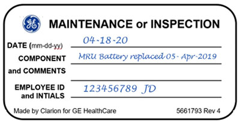

- 00000018WIA30AA6410GYZ
- id_20044304.16
- Jul 28, 2025, 5:46:11 PM
Doing an MRU yearly service check (MRU, ERU, or EDU PM testing matrix)
The model number is listed on the side of the Magnet Rundown Unit (MRU), Emergency Rundown Unit (ERU), or Emergency Discharge Unit (EDU). Refer to the appropriate vendor manual available from the online documentation library for applicable testing procedures.
About this task
Note (For MRU yearly service check) If you have the MRU Tester (5730424 ) available, follow the procedure below for the MRU yearly test. See Testing MRU.
| Type | Model number | Service manual | Quarterly test | Yearly test | Remote MRU testing (if installed) | Battery replacement schedule |
|---|---|---|---|---|---|---|
| Type I | 5196918 or 5196918-2 | 5265188 | Complete quarterly service test | Complete yearly service test | Part of yearly service test procedure | 3 year |
| Type II | 46-294231G1 | 46-318393 | Complete quarterly service test | Complete yearly service test | Complete appropriate quarterly and yearly test on the remote unit | 3 year |
| Type III |
46-252138G4 46-252138G3 46-252138G2 | 46-294439 | Complete quarterly service test | Complete yearly service test | Not applicable | 3 year |
| Type IV | 2295525-8 | 5717641 | Complete quarterly service test | Complete Sect 7 Periodic Testing | Part of yearly service test procedure | 3 year |
Note (For all MRU procedures) The following steps must be completed if no label is found when doing a PM.
Procedure
- Determine the date for the MRU battery. This date can be derived from the installation of the system, manufacturing date of the unit, or dispatch history.
- Get the GE Equipment Maintenance or Inspection (5661793) sticker and complete all entries on the sticker including your name, employee ID, and today's date. Put the sticker on the MRU where it is easy to see.
- For devices where the date is unknown or where there are concerns about the accuracy of the date, do the following when you replace the part:
- Get the GE Equipment Maintenance or Inspection sticker and complete all entries on the sticker including your name, employee ID and use today's date.
- Put the sticker on the MRU where it is visible.
Figure 1. GE Equipment Maintenance or Inspection sticker 